Lista Banchi: creare e gestire i banchi
Target: tecnico installatore / rivenditore.
Obiettivo
Creare i banchi sulla bilancia, impostare i contatori di numerazione e attivare la tracciabilità sui banchi che la richiedono. È la prima operazione da fare quando si riceve una bilancia Icona.
Il concetto di banco
Icona è una bilancia multibanco: sulla stessa bilancia possono coesistere più banchi (per esempio salumeria e macelleria). Un banco può lavorare da solo oppure, con le impostazioni giuste, la bilancia può lavorare in multibanco, passando da un banco all'altro con le schede della tastiera (vedi Schede Tastiera).
Ogni banco ha tastiera, archivio articoli e impostazioni propri. Nella grande distribuzione le bilance di banchi diversi possono essere collegate alla stessa struttura ma hanno bisogno di layout e database di riferimento completamente diversi: esisterà il PLU numero 1 della macelleria e anche il PLU numero 1 della salumeria, e le due configurazioni coesistono sulla stessa bilancia. Il banco serve anche per un negozio retail o una piccola GDO: va sempre creato.
Il configuratore è a bordo della bilancia
Il configuratore è un punto di accesso al database. Si può usare dalla bilancia stessa oppure da un PC con VirtualScale (vedi Conoscere Icona). Si possono quindi costruire reti di bilance interconnesse, con una bilancia principale e le altre come punti di accesso al database.
Prerequisiti
- La bilancia è appena arrivata: nessuna programmazione e tastiera di default preconfigurata.
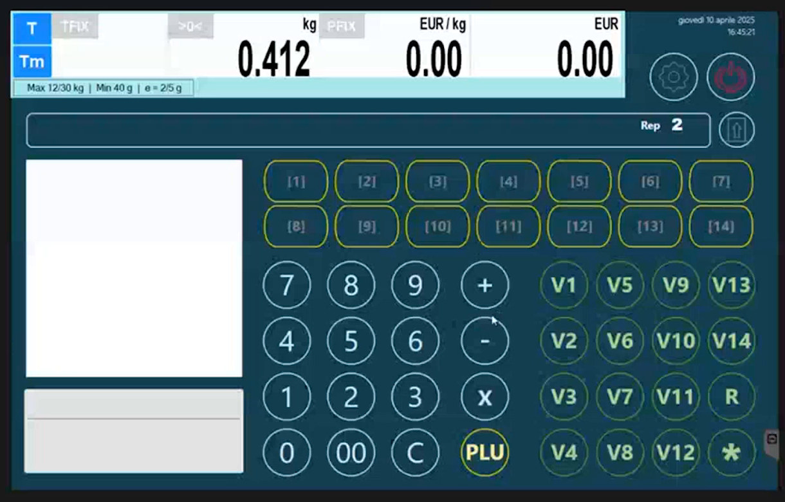
Procedura
1. Apri il configuratore
Dalla schermata di vendita tocca l'icona a forma di ingranaggio, in alto a destra accanto al tasto di spegnimento. Si apre il menu Setup Bilancia: a sinistra le sezioni (Configurazione, Archivi Dati, Formati Barcode, Tracciabilità, Totali, Manutenzione, Azzeramenti), a destra le voci della sezione scelta. In Configurazione trovi Collegamenti, Lista Banchi, Bilancia, Configurazione Operativa, Configurazione Tastiera, Schede Tastiera, Gestione Elimina Code, Gestione Ordini, Imposta Data/Ora e Lingua.
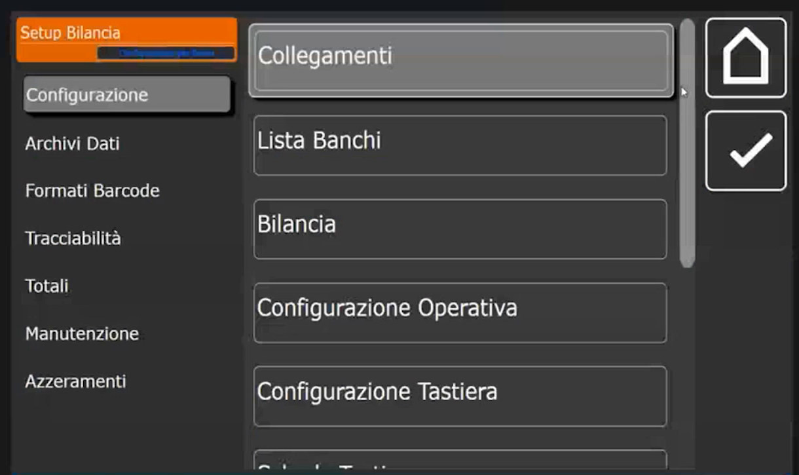
Da verificare
Il tocco sull'ingranaggio non è documentato schermata per schermata: controlla sulla bilancia. Se la Gestione Password è attiva (pagina Bilancia) l'accesso alla programmazione richiede una password.
2. Seleziona Lista Banchi
Tocca Lista Banchi. Va compilata prima di qualsiasi altra configurazione.
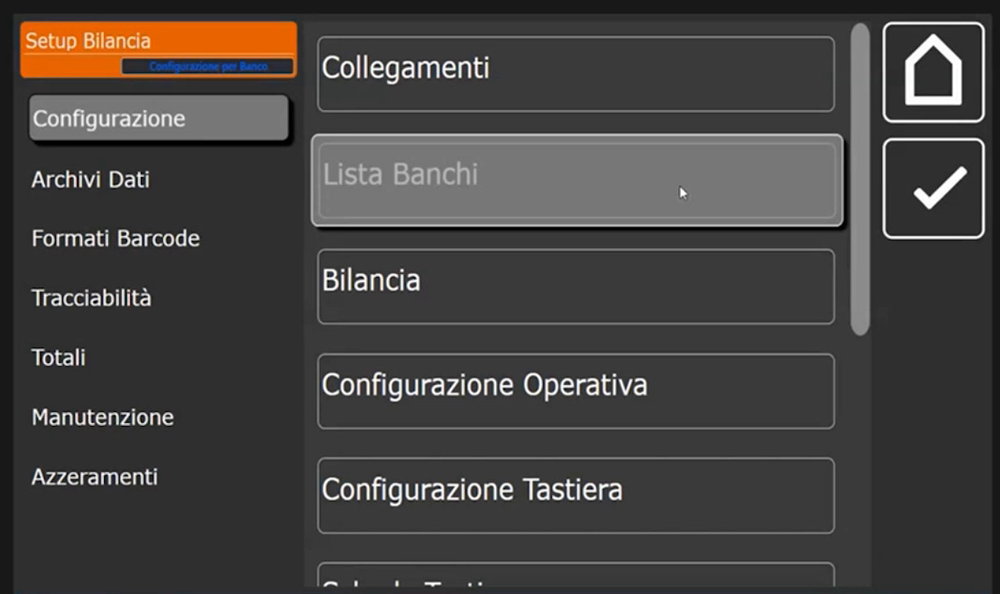
La lista parte vuota: colonne Banco, Nome, Tracc. e New Prg.. A destra il pulsante + aggiunge un banco.
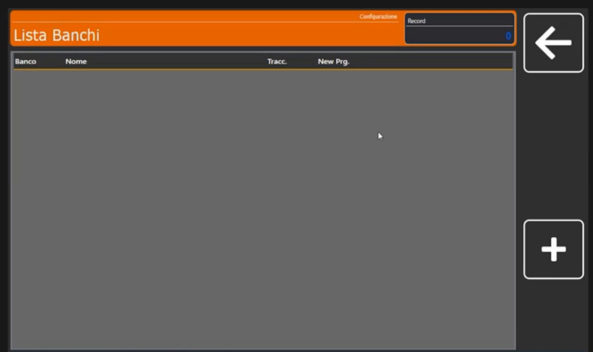
3. Crea il banco 1
Tocca +: si apre il tastierino Numero Banco. Digita 1 e conferma con Ok.
Il numero del banco conta
Il numero del banco è importante se poi si collegano driver o applicativi esterni (per esempio Zenith System, BenchComm o CE_Gest): il collegamento avviene per numero di banco.
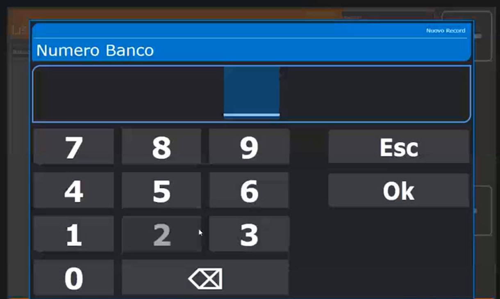
Si apre la scheda del nuovo banco, sezione Generale: Numero Banco, Nome Banco, Abilita Tracciabilità e Nuovo progressivo per riapertura. La bilancia guida passo passo su ciò che serve per il banco.
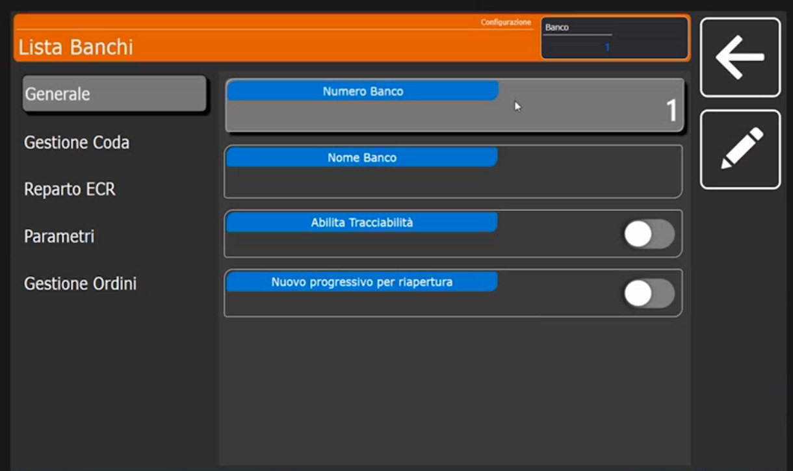
4. Assegna il nome
Tocca la matita (in alto a destra): si apre la tastiera con titolo Nome Banco. Scrivi il nome (nell'esempio SALUMERIA) e conferma con Ok.
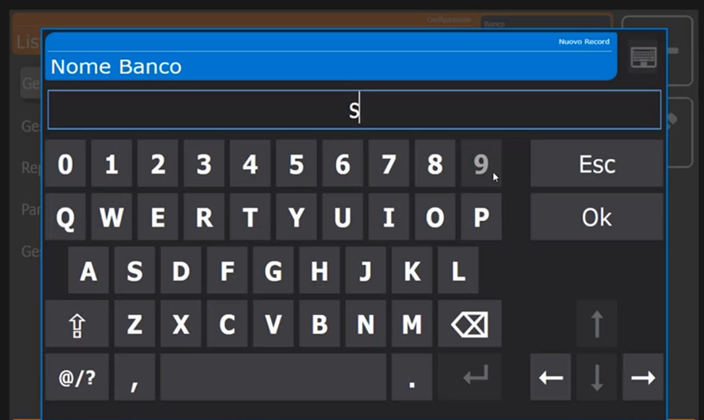
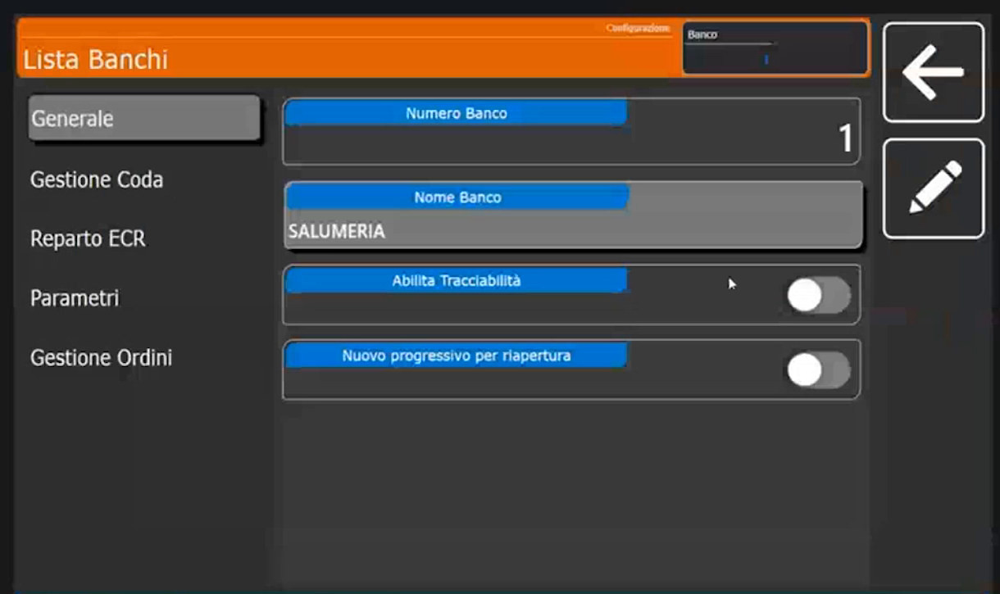
Tracciabilità
Per la salumeria la tracciabilità non serve: Abilita Tracciabilità resta disattivato. Come funziona è descritto in Tracciabilità e lotti.
5. Scorri il menu laterale del banco
Nella scheda del banco, a sinistra, trovi Generale, Gestione Coda, Reparto ECR, Parametri, Gestione Ordini.
Gestione Coda. Abilita dispositivi esterni per la gestione dell'eliminacode. Tra i valori disponibili compare Visor, perché la bilancia si interfaccia anche con software di terzi per la gestione delle code, non solo con quelli Custom. Campi: ID Reparto Elimina Code, Numero Reparto (x Visel), Colore Carattere (Black) e Colore Sfondo (White).
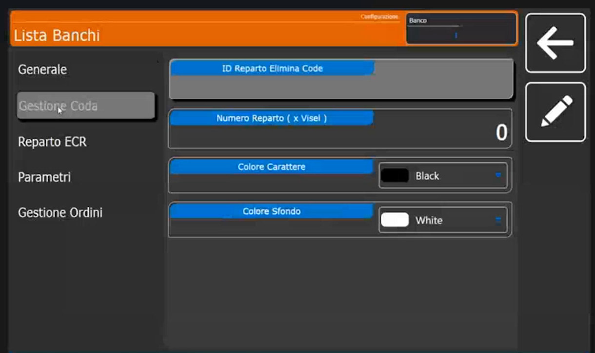
Reparto ECR. Riguarda la modalità di connessione con il registratore di cassa. Campi: Numero Reparto e Nome Reparto.
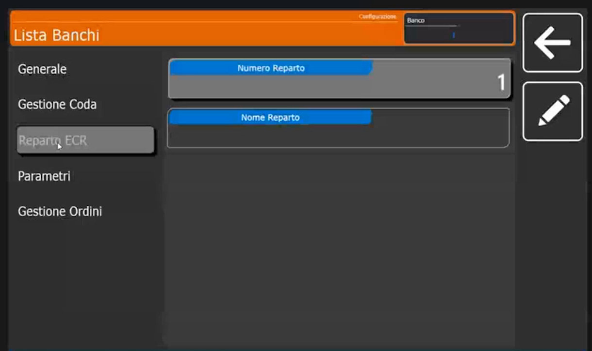
6. Imposta i contatori in Parametri
Tocca Parametri. Di default la bilancia non identifica la numerazione di scontrini, etichette e progressivi: i valori partono da 9999 e vanno impostati. I campi sono Min Progressivo e Max Progressivo per tre tipi di documento: Scontrino, Etichetta e Self Service.
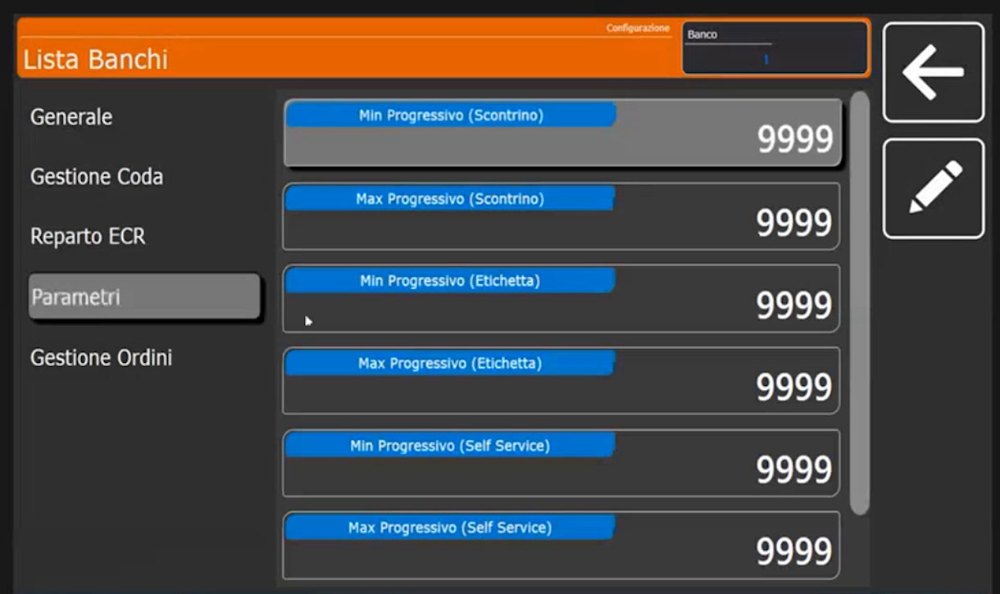
Per ogni contatore tocca il campo e usa il tastierino.
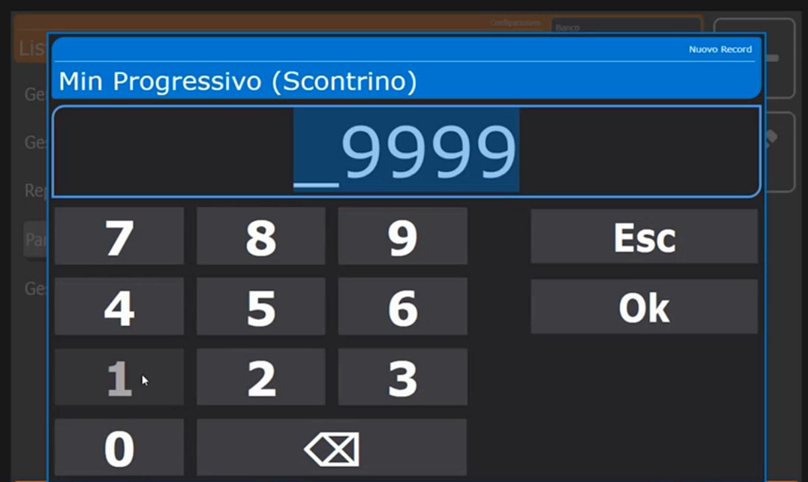
- Porta ogni minimo a 1: i contatori devono andare da un minimo a un massimo con una logica coerente.
- Il massimo del progressivo scontrino, anziché finire a 4 cifre, si può impostare a 3 cifre (999).
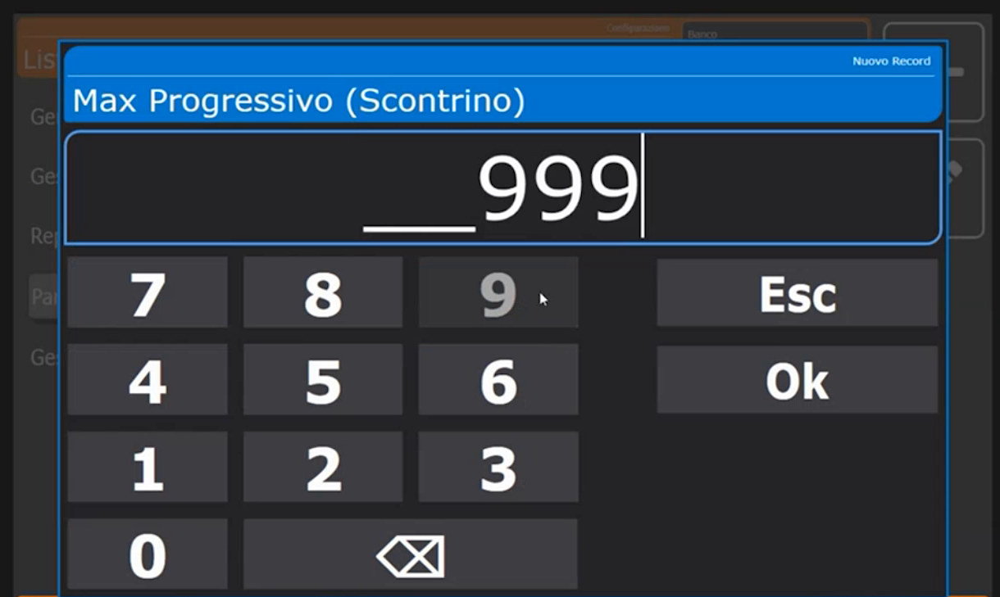
Quando abbassare il progressivo a 3 cifre
Se la bilancia è collegata a sistemi che prevedono l'esplosione dello scontrino (per esempio tramite Zenith System), imposta il progressivo scontrino a 3 cifre: dopo il 999 la bilancia riparte automaticamente da zero. Non serve per etichette e Self Service. Il progressivo viene riportato non solo a video ma anche sulla stampa dello scontrino grafico e deve poi essere ripreso nella lettura del codice a barre; per una bilancia stand alone, senza applicativi esterni, il valore è meno critico.
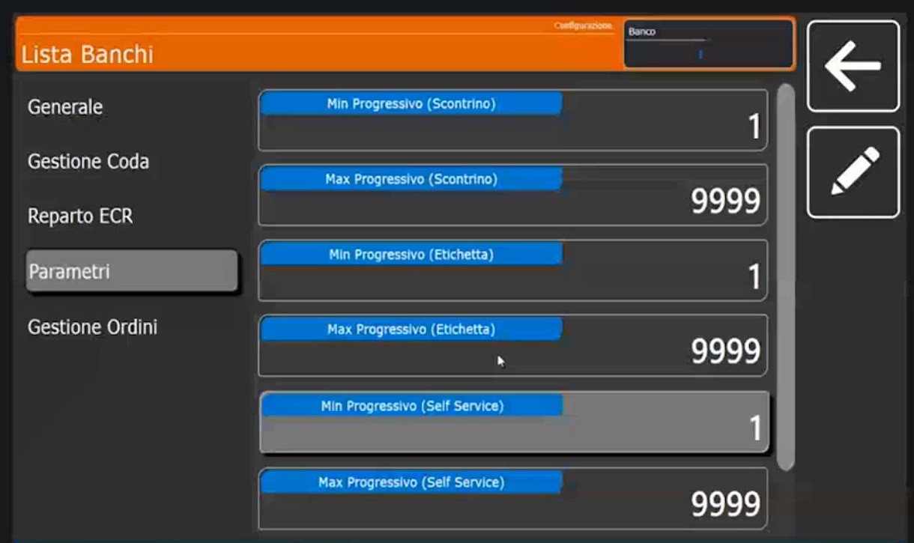
7. Lascia stare Gestione Ordini
Gestione Ordini non va toccata: è una funzione sviluppata per una parte della grande distribuzione ed è in evoluzione, per permettere anche a software house più piccole di gestire gli ordini sulla bilancia o direttamente dalla bilancia.
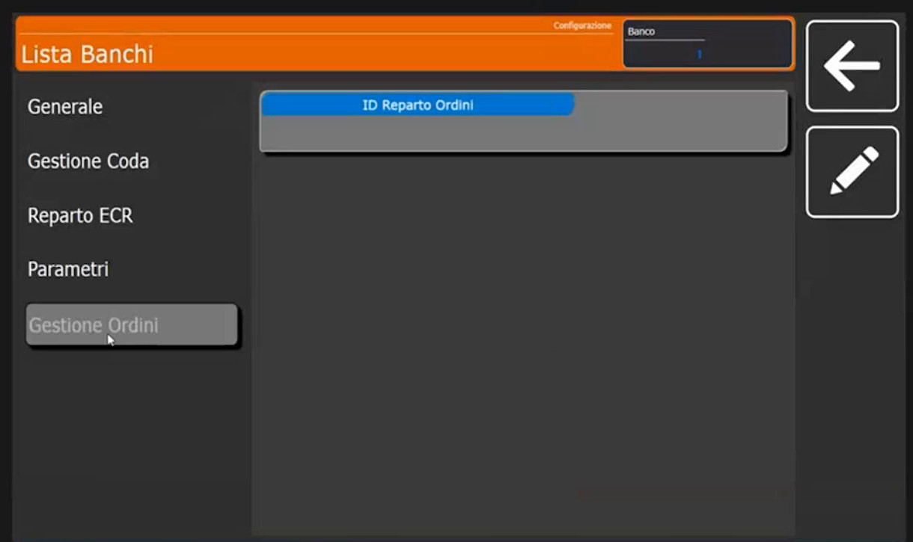
8. Aggiungi il secondo banco: MACELLERIA
Il banco 1 compare nella lista.
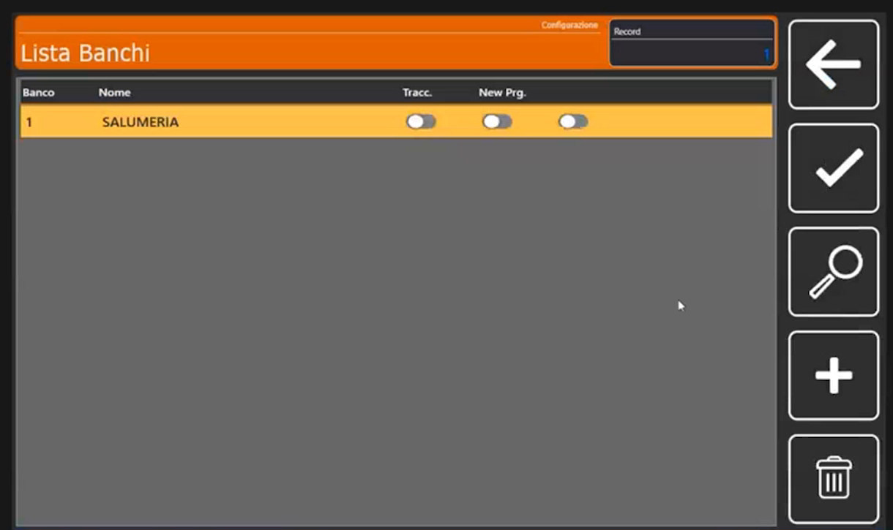
Tocca di nuovo +, digita 2 e assegna il nome MACELLERIA.
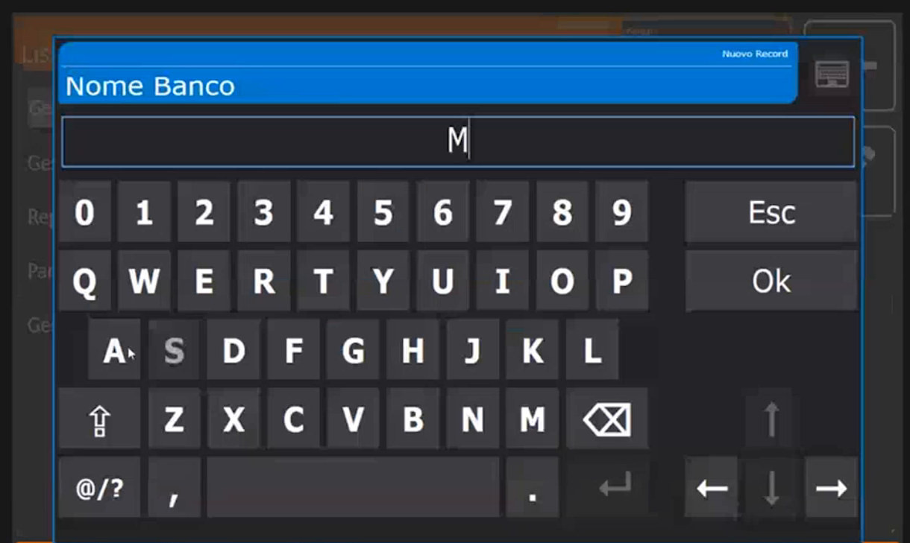
Nella macelleria attiva Abilita Tracciabilità: i prodotti di questo settore merceologico, per circa il 90%, richiedono la gestione della tracciabilità. Il selettore diventa verde.
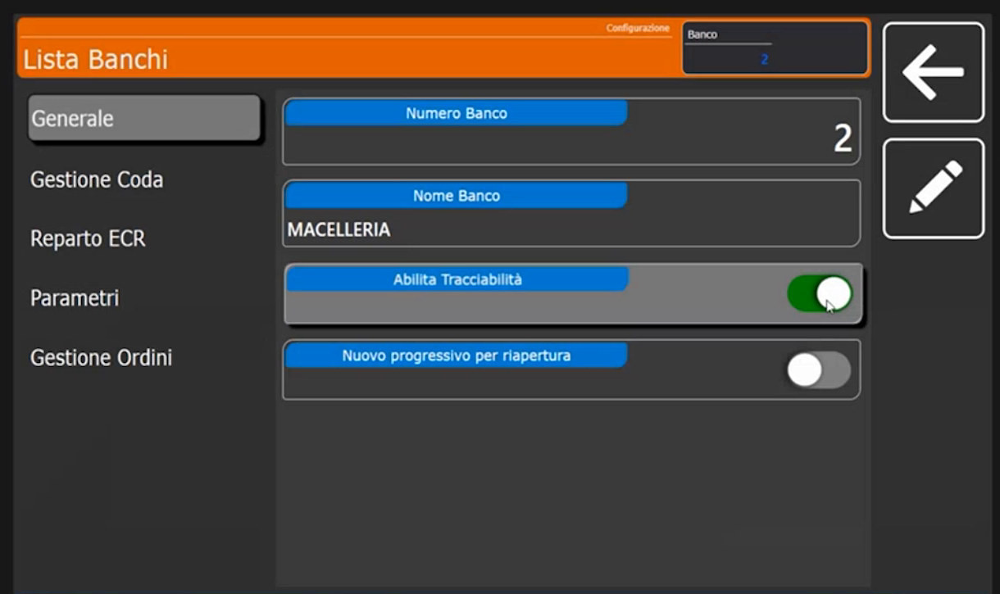
Verifica
Nella Lista Banchi compaiono due righe, 1 SALUMERIA e 2 MACELLERIA, con l'indicatore Tracc. acceso solo sulla macelleria.
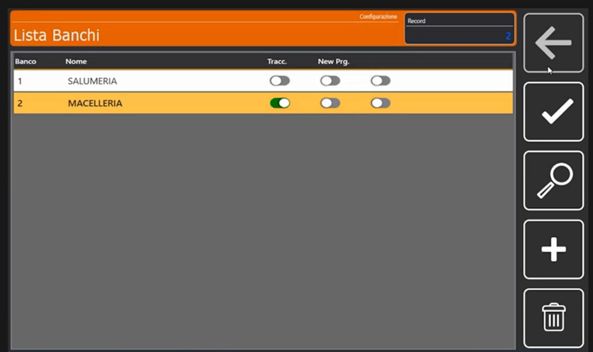
Errori comuni
| Problema | Causa probabile | Rimedio |
|---|---|---|
| Gli scontrini o le etichette non hanno numerazione | I contatori in Parametri sono rimasti ai valori di default (9999) | Imposta minimo e massimo per Scontrino, Etichetta e Self Service |
| Lo scontrino esploso in cassa non viene letto correttamente | Progressivo scontrino a 4 cifre con un sistema che ne prevede 3 | Porta il massimo a 999 |
| Gli articoli di un banco compaiono in un altro | Banco attivo o numero banco della bilancia sbagliato | Controlla Numero Banco e Banco Attivo nella pagina Bilancia |
Prossimo passo
Prima di attivare un banco sulla bilancia, controlla i Collegamenti.